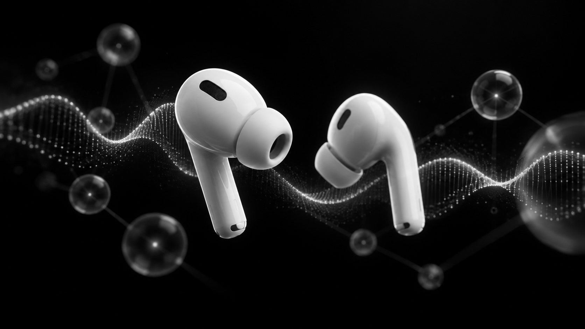

AI you control without a screen.
TapQ is an open source macOS app that turns the AirPods people already wear into a private control surface for AI agents. Nod to approve, shake to decline, tilt to choose, speak to follow up. Launched from 50 beta users to 200+ downloads and 500+ GitHub stars with 40% D30 retention, and now expanding from developer agents into Business, Lecture, and Travel modes.

What was not working
AI capability is scaling faster than human attention. An agent can work alone for minutes, then stall on a permission prompt until someone comes back to the terminal. In meetings and lectures the same thing happens in reverse: the moment you need help is exactly the moment you cannot pick up a phone.
What the user actually needed
The next interface is not another app or another gadget. It is a private control surface people already wear. The product had to be silent to use, private in what it says back, and honest about when it is unsure.
AI is becoming ambient. Interaction is still stuck on screens.
People now supervise several AI systems at once. The bottleneck is no longer the model. It is the moment a human has to return, unlock, read, and respond. Three frictions kept coming up in interviews, and each one had an interaction answer.
Saying a wake phrase in a meeting, a lecture, or a quiet office announces the interaction to the whole room.
A double nod approves, a double shake declines, a tilt selects. Silent, private, and no phrase to say out loud.
Always on assistants cannot tell the wearer from the people around them, so they either miss commands or act on someone else's.
Motion data from the earbuds confirms the wearer is the one speaking, so full duplex conversation with an agent works in a shared space.
A coding agent can work for minutes, then wait on a permission prompt until you come back to the terminal.
Prompts are spoken in the ear. Approve, deny, choose an option, or queue a follow up without leaving what you are doing.
TapQ does not manufacture hardware. It owns the interaction protocol between human intent and AI execution, on devices people already own.
From developer agents to the rest of the day
The wedge is developer agent supervision because the actions are crisp: approve, deny, choose, follow up. The roadmap extends the same interaction primitive to meetings, lectures, and travel, in the order the research supported.
Let people stay present in the real world while AI remains available, informed, and controllable.
- Existing device leverage: AirPods and the Mac you already own, no pendant or pin
- Private in ear output: assistance goes to the wearer, never to the room
- Motion as intent: nod, shake, and tilt are a silent response channel
- Context aware intervention: the AI acts on what is happening now
- Agent connectivity: it connects back to real workflows, not just answers
- Safe fallback: an ambiguous gesture falls through to the screen instead of inventing an action
Primary: AI native knowledge worker
Supervising agents and sitting in meetings both keep pulling attention back to a screen
Secondary: university student
Concepts go by faster than they can be looked up without missing what comes next
Future: cross language professional
Translation exists everywhere; interpretation and the ability to respond do not
- Five agent adapters
- Double nod, double shake, tilt
- IMU voice attribution
- Full duplex voice with interruption
- Unified gesture queue across sessions
- Explicit meeting session and consent
- Rolling context and term detection
- Proactive offer, nod to explain
- Contextual explanation in ear
- Summary, decisions, action items, glossary
- Lecture capture
- Concept detection tuned for teaching
- Discreet explain this
- Structured review notes
- Unresolved questions surfaced
- Best available translation service
- What did they mean by that
- Tell them I have a reservation
- Summarize the instructions
- Hands free while moving
Transcription, summarization, and translation are treated as enabling capabilities from best available providers, not as the product. TapQ competes on the intervention: when to ask, how to ask privately, and what the gesture controls.
What I owned
- Launched TapQ, an open source AirPods interface for hands free AI agent control, scaling from 50 beta users to 200+ downloads and 500+ GitHub stars while achieving 40% D30 retention; translated head gestures into intuitive approve, reject, and selection actions across AI agent workflows.
- Identified voice attribution as a key limitation of always on AI interfaces through user interviews and designed an IMU based system that distinguishes the wearer's speech from ambient audio, enabling full duplex agent interaction without wake words.
- Defined the product roadmap beyond developer agents into Business, Lecture, and Travel modes, prioritizing context aware meeting assistance based on user research; designed proactive AI experiences that surface unfamiliar terminology, respond to nod and shake gestures, generate contextual explanations, and capture searchable meeting or lecture notes.
- Wrote the product strategy, the Business Mode PRD, the competitive landscape, the decision log, the metrics framework, and the research plan, all public in the repository.
- Owned the investor product vision and the founding access waitlist at tapq.ai.
What had to be true
- No new hardware. Everything has to run on AirPods, a Mac, and sensor access Apple exposes.
- Apple already ships nod and shake for Siri, so gestures alone are not a moat. The value has to come from what the gesture controls.
- Proactive assistance that interrupts too often gets switched off. Precision over volume.
- Meeting capture carries consent and privacy risk; recording state has to be explicit and visible.
Pick the wedge where the actions are crisp
Developer agent supervision was the first mode because the decisions are binary and frequent: approve, deny, choose, follow up. A double nod maps to yes without ambiguity, and users can feel the saved context switches the same day.
Solve attribution before adding voice
Interviews kept surfacing two frictions: wake phrases feel socially awkward, and always on voice cannot tell who is talking. The IMU on the earbuds solves both. Motion confirms the wearer is speaking, so the agent can hold a full duplex conversation with interruptions in a shared room, without a wake word.
Choose Business Mode over Lecture and Travel
An investor conversation surfaced a specific pain: professionals hear terms in meetings they do not want to ask about publicly. Follow up interviews and a survey confirmed it. Business Mode came first because the evidence was direct, willingness to pay is highest, and the nod maps cleanly to explain or dismiss.
Lecture Mode reuses the same context engine once Business Mode is validated. Travel Mode came last on purpose: live translation is being bundled by Apple, Google, and Meta, so TapQ adds interpretation and response on top rather than competing on translation.
Differentiate on the intervention, not the transcript
Granola, Otter, Plaud, and ChatGPT Record already own capture and summaries. TapQ treats transcription as plumbing and competes on the private, context aware moment during the meeting: detect, ask, nod, explain.
What shipped
- A macOS app that speaks agent prompts in the ear and accepts double nod to approve, double shake to decline, tilt to navigate options, and voice for follow ups.
- IMU augmented voice detection that distinguishes wearer speech from ambient noise, with natural interruption between user and agent.
- A unified gesture queue across concurrent agent sessions, and a fail open design so a missed gesture never blocks a workflow.
- Five agent adapters: Claude Code, Codex, Cursor, Google Antigravity, OpenCode.
- A public product package: strategy, Business Mode PRD, roadmap, decision log, metrics, research plan, and copy ready GitHub issues.
How it was built
- Swift 6 on macOS, Apache 2.0 licensed.
- AirPods motion data drives gesture detection and voice attribution; speech backends deliver prompts privately in ear.
- Adapters translate each agent's permission and clarification events into spoken prompts and route the response back.
- Business Mode adds an explicit session, rolling transcript context, candidate term detection, and a consent gated explanation step.
A private micro interaction
- 1Listen: the session captures the meeting or the agent's prompt
- 2Detect: rolling context flags an unfamiliar term or a decision the agent needs
- 3Ask: a short private question in your ear, never through a speaker
- 4Nod or shake: consent or dismissal, no wake word, no screen
- 5Explain or act: a contextual answer, an approval sent to the agent, a note saved
Trade offs I made on purpose
- Used hardware people already own instead of shipping a pendant or pin.
- Made proactive help ask permission before explaining, and measured it on precision and unwanted interruption rate rather than volume.
- Let a head gesture approve only low risk actions; consequential actions fall back to the screen.
- Published the product thinking openly so the roadmap is a conversation with users, not a promise of dates.
Takeaways
- A gesture is not a feature. What the gesture controls is the product.
- Voice attribution is the unglamorous problem that makes always on AI socially usable.
- Publishing the strategy and decision log in the open made the roadmap arguments shorter and the contributors better.